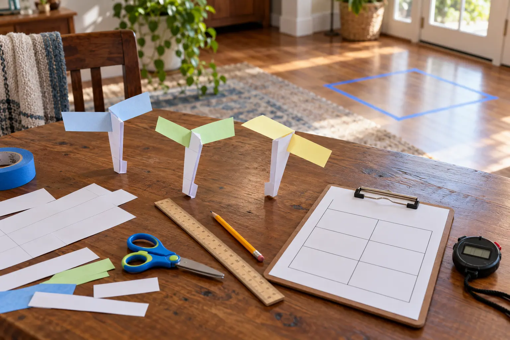

0–5 minutes
Clear a drop zone, gather plain paper, pencil, ruler, closed scissors and a timer. Mark one standing drop line.
AT HOME · 30 MINUTES · AGES 7+ · NO-SPEND
This is not a decorating project. Build one paper rotor, run three honest drops, change one variable and let the results beat the guesses.

Build one baseline paper helicopter, drop it three times from the same safe standing reach, average the fall time, change one variable, and repeat. NASA JPL frames the activity as engineering design: build, test, compare and improve. The useful habit is not making the slowest helicopter. It is changing one thing and keeping the test honest.
NASA lists plain paper, scissors, measuring tape and pencil, with ribbon or a phone camera optional. You do not need the optional items. The paper bridge load test is a better alternative when the room lacks a clear drop zone.
Use NASA JPL’s paper helicopter project and template for the basic geometry. Cut only the marked lines. Fold the two top blades in opposite directions. Fold the side panels inward and the bottom upward so the body stays stiff and the lower mass helps stabilize the fall. That explanation comes from NASA’s activity; your tabletop model is not a scale Mars aircraft.
Before the first drop, ask for a prediction: clockwise, counterclockwise or not sure? Do not correct it. A prediction is not a promise; it is something the observation can challenge.
One person releases without throwing. One person times. Switch jobs after three drops if that matters to the children, but note that human reaction time adds uncertainty. Use the same release hand, height, floor target and timer method for both designs. If the helicopter hits furniture, a person or a wall, mark the trial invalid and repeat it rather than editing the number into something convenient.
Add the three times and divide by three if the child is ready for an average. Otherwise circle the middle time. The point is not advanced math. It is an honest summary of repeated observations.
Blade length: shorten both blades equally. Paper type: rebuild the same dimensions with a different paper. Bottom mass: add one extra fold at the bottom. Scale: make a proportionally smaller copy only if the group can measure carefully. Do not change blade length, paper and release height together. NASA’s lesson emphasizes multiple designs and controlled fair tests because that reveals which feature may matter.
A slower fall is not automatically “better.” A design that spins reliably but lands sooner may be more consistent. Decide the goal before comparing: longest average time, smallest spread between trials, cleanest rotation or most accurate landing.
Gravity pulls the paper downward. The rotating blades interact with air, and the design’s shape and mass distribution affect the descent. NASA’s real Ingenuity helicopter had to generate lift in Mars’s very thin atmosphere; engineers tested and redesigned for that environment. A falling paper rotor in a living room is an analogy for iterative design, not a demonstration of powered Mars flight.
Separate three statements: we observed the paper rotate; we infer the changed blade affected the fall; we would need more tests to know whether that pattern is reliable. The same evidence discipline appears in the trail-map reading game and leaf pigment lab.
This works indoors, but moving HVAC air, an open window or a ceiling fan can change the drop. Turn those off only if safe and practical, or write “air moving” beside the result. Child frustrated by cutting: the adult cuts while the child controls prediction and testing. Timer conflict: stop timing and compare rotation or landing location instead. Low-energy version: build one rotor, make one prediction, drop three times and stop. No-scissors version: watch the official NASA tutorial and sketch which single change you would test later.
Skip when the only possible drop requires a chair, stairs, railing or crowded landing zone; when scissors cannot be supervised; or when younger children or pets will grab paper scraps. Skip the stopwatch when competition will bury observation. Do not release anything over a person, animal, food, stairwell or breakable object.
MAKE THE DAY COUNT
Build the plan your family can finish well, then leave enough energy for the next part of the day.
More family plans